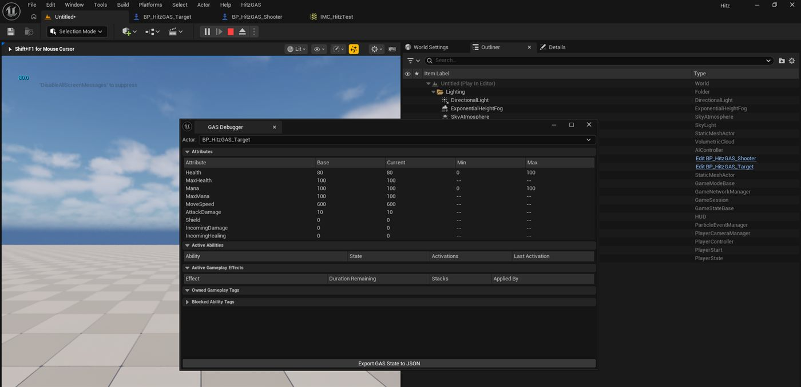
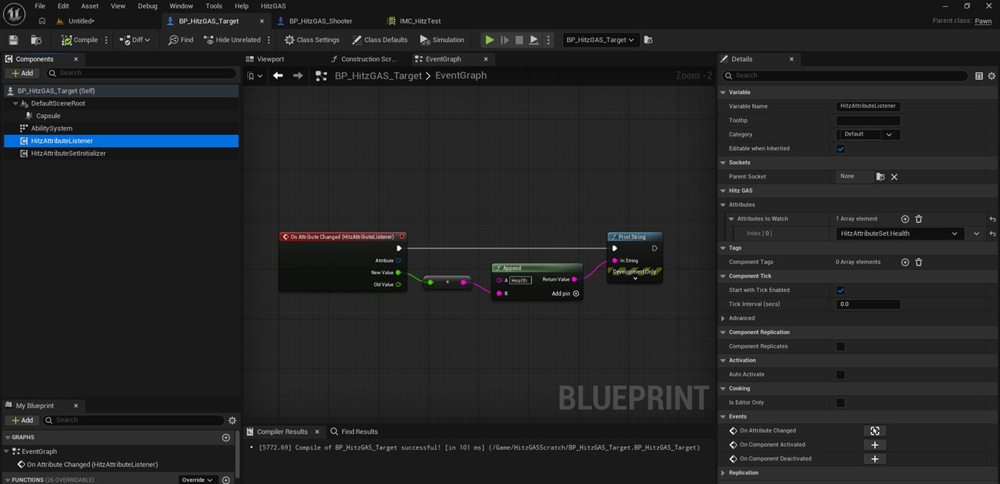
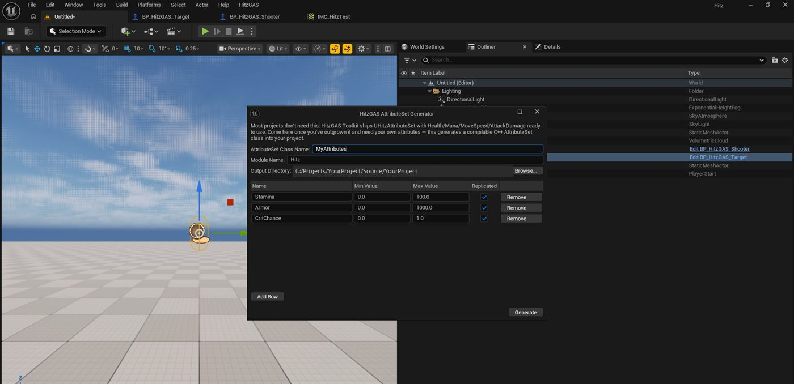

Add three components to a Blueprint actor, press Play, and watch real attributes change. No C++ subclass, no ability-system boilerplate, no week spent learning a framework before you write your first ability.

Nothing to install or enable by hand. The two plugins below are declared as dependencies, so switching on HitzGAS Toolkit switches them on too.
| Requires | Type | You do |
|---|---|---|
GameplayAbilities | Engine plugin | Nothing — enabled automatically |
EnhancedInput | Engine plugin | Nothing — enabled automatically |
GameplayTags | Engine module | Nothing — built into the engine |
GameplayTasks | Engine module | Nothing — built into the engine |
PhysicsCore | Engine module | Nothing — built into the engine |
The HitzAbilityInput component binds InputActions through an Enhanced Input mapping
context. If your project still uses the legacy input system, that one component
will not work. Everything else — attributes, abilities, effects, the listener and the debugger —
is input-agnostic and works either way; you would just activate abilities through your own input
path instead.
This is a code plugin, so it installs to the engine pre-compiled. You do not need a C++ project, a compiler, or Visual Studio to use it.
Three components on any Blueprint actor. That is the whole setup.
Add an Ability System Component (Unreal's own), then a
Hitz Attribute Set Initializer. The initializer is what makes the ASC actually
work — it calls InitAbilityActorInfo, which stock GAS never exposes to Blueprint, and
spawns the AttributeSet. Without it the ASC sits inert: effects go nowhere and tags never appear.
Grant your abilities here. The initializer's Default Abilities
array is what gives abilities to the ASC. An ability that is not granted cannot be activated —
input will appear to do nothing.
Add a Hitz Ability Input component. Set its Mapping Context to an
Enhanced Input mapping context, then add one Ability Bindings entry per ability:
an InputAction and the ability class it activates.
Add a Hitz Attribute Listener, add Health to its
Attributes To Watch, and bind its On Attribute Changed event. You get the
attribute, the new value and the old value — with no AbilitySystemComponent references anywhere in
your graph.

| Component | What it does |
|---|---|
HitzAttributeSetInitializer | Calls InitAbilityActorInfo, spawns the AttributeSet, grants DefaultAbilities, applies initial values from an optional DataTable. |
HitzAttributeListener | Fires a Blueprint event whenever a watched attribute changes. |
HitzAbilityInput | Registers an Enhanced Input mapping context and activates abilities from InputActions. |
UHitzAttributeSet ships with Health, MaxHealth, Mana, MaxMana, MoveSpeed,
AttackDamage and Shield, plus meta attributes for incoming damage and healing. Damage routes
through Shield before Health and clamps at zero.
| Ability | Pattern |
|---|---|
HitzGA_InstantDamage | Line trace from the avatar's view point, applies a damage effect to the first ASC it hits. |
HitzGA_AoEGroundStamp | Sphere overlap around the avatar, applies to every ASC-owning actor found. |
HitzGA_Channel | Applies a tick effect for a duration, then a completion effect. Interruptible by gameplay event. |
HitzGA_Dash | Root-motion dash. The only ability that ships with a real cooldown. |
HitzGA_Projectile | Spawns your projectile actor and hands it the effect to apply on hit. |
HitzGA_Toggle | On/off state driven by a gameplay tag. |
Damage, burn, heal-over-time, shield, stun, silence, slow, a dash cooldown and a toggle-state effect. All SetByCaller-driven, so you supply the magnitudes.
| Tool | Where |
|---|---|
| GAS Debugger | HitzGAS → GAS Debugger. Live attributes, granted abilities with activation counts, active effects, owned tags. Exports to JSON. |
| AttributeSet Generator | HitzGAS → Generate AttributeSet…. Writes a compilable C++ AttributeSet with replication, OnRep handlers and clamping. |

All under HitzGAS | EventBus:
| Function | Notes |
|---|---|
Get ASC | Returns an actor's AbilitySystemComponent, component- or interface-based. |
Actor Has Tag | Whether the ASC currently owns a gameplay tag. |
Send GAS Event | Sends a gameplay event. Returns false and logs if the actor has no ASC or the tag is empty. |
Apply Effect To Actor | Applies an effect with SetByCaller magnitudes. Server-authoritative — returns false and logs if called without authority. |
Init Ability System | Exposes InitAbilityActorInfo to Blueprint. Usually unnecessary; the initializer component handles it. |
Add Attribute Set | Creates and registers an AttributeSet on an ASC at runtime. |
The failure modes people actually hit, and what each one means.
Almost always one of three things, in order of likelihood:
The ability was never granted. Input activation uses
TryActivateAbilityByClass, which only searches abilities already granted to the ASC.
Add the ability to the initializer's Default Abilities array.
The mapping context has no key bound. Open the Input Mapping Context asset and confirm there is an actual key under your InputAction — an empty mappings list looks correctly configured everywhere else in the chain.
The pawn is not possessed. Set Auto Possess Player to
Player 0, or possess it from your game mode.
HitzGA_InstantDamage traces from the avatar's view point — actor
location plus BaseEyeHeight, which defaults to 64 units. It does not trace from the
actor origin.
A target whose collision does not reach that height is missed entirely: a default Capsule Collision is only 44 half-height, so a target at the same Z as the shooter tops out 20 units below the trace line. Raise the target, or enlarge its capsule.
Check the Output Log — the trace logs a warning naming the origin and direction when it finds nothing.
Fixed in 1.0.0. If you see it on an older build: the listener bound before the AttributeSet existed, read 0, and never got a correcting notification because values assigned in an AttributeSet's constructor bypass the ability system's change delegates.
The initializer now writes every attribute back through the ASC, so listeners get the real value regardless of component order.
Applying gameplay effects is server-authoritative. Apply Effect To Actor refuses
on a non-authority caller and logs why, because attributes changed on a client are overwritten
by the next replication from the server.
Call it from server-side logic, or from inside a GameplayAbility, which handles prediction properly. In single-player and on a listen server the calling machine is the authority, so it just works.
Dash uses root motion, which requires a UCharacterMovementComponent. The avatar
must be an ACharacter, not a plain APawn. It logs a warning naming the
avatar when the cast fails.
Set CooldownGameplayEffectClass on the ability — that is standard GAS, and
CommitAbility applies it while CanActivateAbility checks it. Dash ships
with one configured as a worked example; the other five deliberately do not, so you are not
fighting a cooldown you did not ask for.
The abilities and effects are working starting points, not a polished library.
They exist to be read, copied and pointed at your own effects. No demo map and no UMG widget ship
with the plugin — Content/ is deliberately empty to keep the download small.
This is a smaller surface area than the large GAS frameworks. That is the intent: it is the fast on-ramp, not the everything-platform.
Every fallback and failure path in the plugin writes to the LogHitzGAS category.
Before filing an issue, check the Output Log — a misconfigured ability usually explains itself.
Issues and questions: github.com/hitz482/HitzGasToolkit/issues